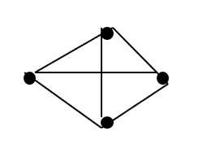
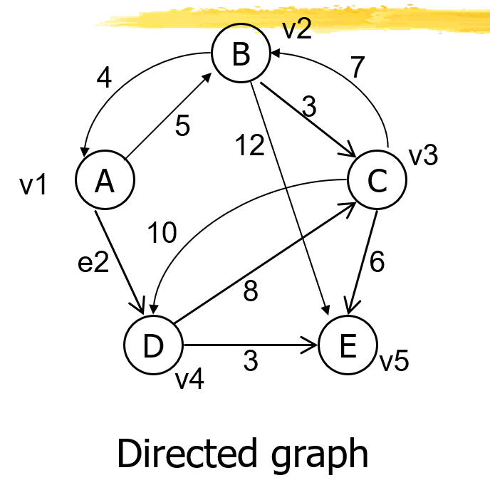

Struktur data graf adalah kumpulan simpul dan sisi yang saling terhubung. Setiap simpul pada graf merepresentasikan objek atau entitas, sedangkan setiap sisi merepresentasikan hubungan antara dua simpul. Graf digunakan untuk merepresentasikan berbagai macam masalah, seperti jaringan sosial, jaringan transportasi, dan jaringan komputer.
Graph adalah kumpulan dari simpul dan busur yang secara matematis dinyatakan sebagai : G = (V, E)
G = Graph
V = Simpul atau Vertex, atau Node, atau Titik
E = Busur atau Edge, atau arc
V terdiri dari v1, v2, …, v5
E terdiri dari e1, e2, … , e7
Sebuah graph mungkin hanya terdiri dari satu simpul
Sebuah graph belum tentu semua simpulnya terhubung dengan busur
Sebuah graph mungkin mempunyai simpul yang tak terhubung dengan simpul yang lain
Sebuah graph mungkin semua simpulnya saling berhubungan

Graph tak berarah (undirected graph atau non-directed graph) :
Urutan simpul dalam sebuah busur tidak dipentingkan. Mis busur e1 dapat disebut busur AB atau BA
Graph berarah (directed graph) :
Urutan simpul mempunyai arti. Mis busur AB adalah e1 sedangkan busur BA adalah e8.
Graph Berbobot (Weighted Graph)
Jika setiap busur mempunyai nilai yang menyatakan hubungan antara 2 buah simpul, maka busur tersebut dinyatakan memiliki bobot.
Bobot sebuah busur dapat menyatakan panjang sebuah jalan dari 2 buah titik, jumlah rata-rata kendaraan perhari yang melalui sebuah jalan, dll.

Panjang busur (atau bobot) mungkin tidak digambarkan secara panjang yang proposional dengan bobotnya. Misal bobot 5 digambarkan lebih panjang dari 7.
Jika e merupakan busur dengan simpul-simpulnya adalah v dan w yang ditulis e=(v,w), maka v dan w disebut “terletak” pada e, dan e disebut incident dengan v dan w.
Degree sebuah simpul adalah jumlah busur yang incident dengan simpul tersebut.
Indegree sebuah simpul pada graph berarah adalah jumlah busur yang kepalanya incident dengan simpul tersebut, atau jumlah busur yang “masuk” atau menuju simpul tersebut.
Outdegree sebuah simpul pada graph berarah adalah jumlah busur yang ekornya incident dengan simpul tersebut, atau jumlah busur yang “keluar” atau berasal dari simpul tersebut.
Pada graph tidah berarah, 2 buah simpul disebut adjacent bila ada busur yang menghubungkan kedua simpul tersebut. Simpul v dan w disebut adjacent.
Pada graph berarah, simpul v disebut adjacent dengan simpul w bila ada busur dari w ke v.
Pada graph berarah, bila simpul v adjacent dengan simpul w, maka simpul v adalah successor simpul w, dan simpul w adalah predecessor dari simpul v.
Sebuah path adalah serangkaian simpul-simpul yang berbeda, yang adjacent secara berturut-turut dari simpul satu ke simpul berikutnya.